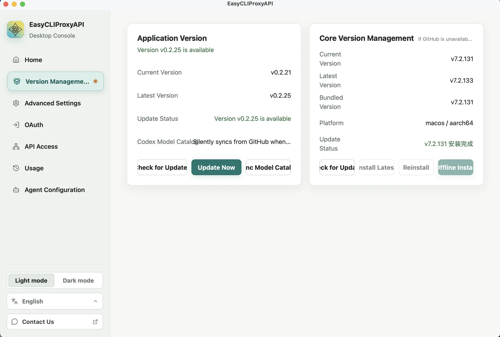
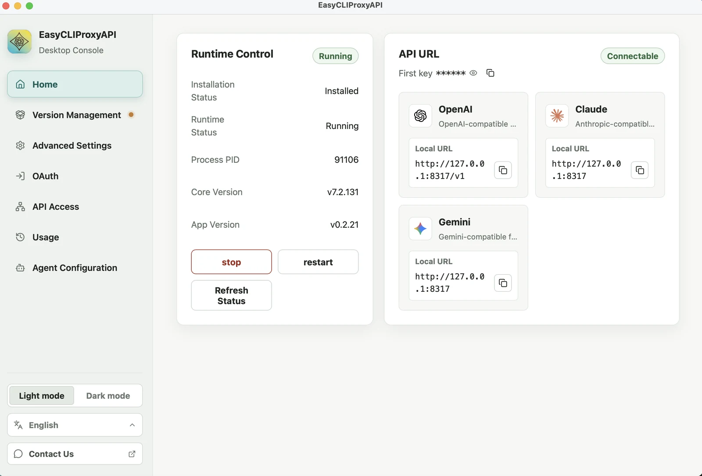
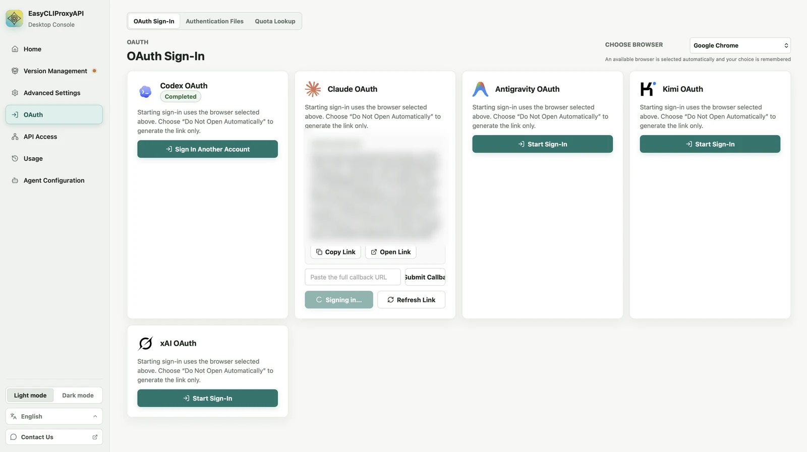
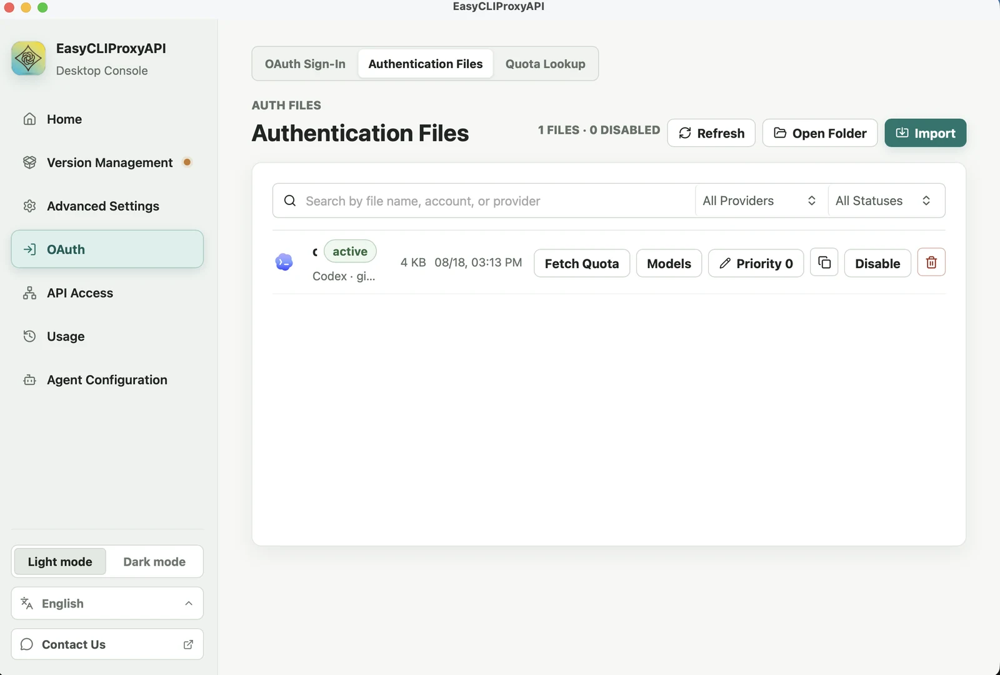
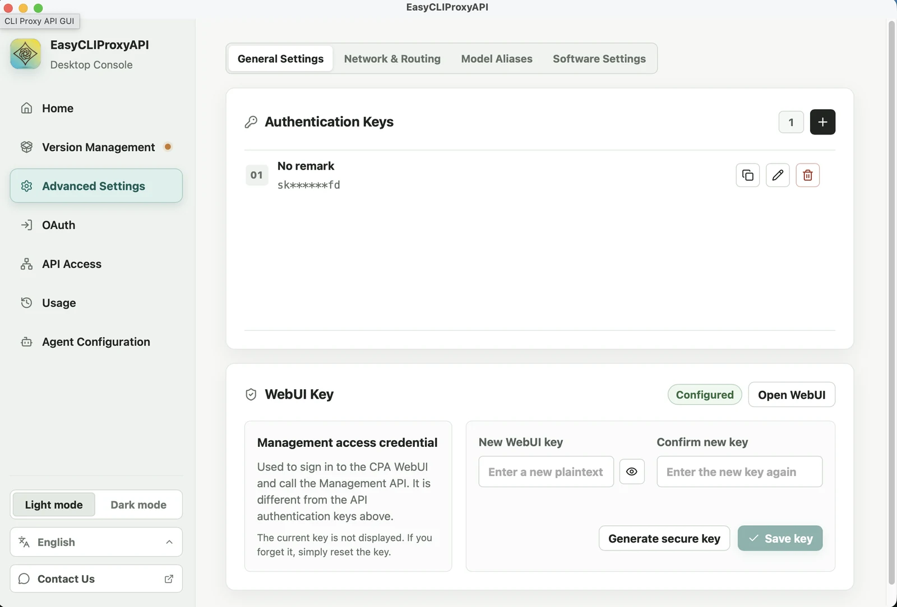
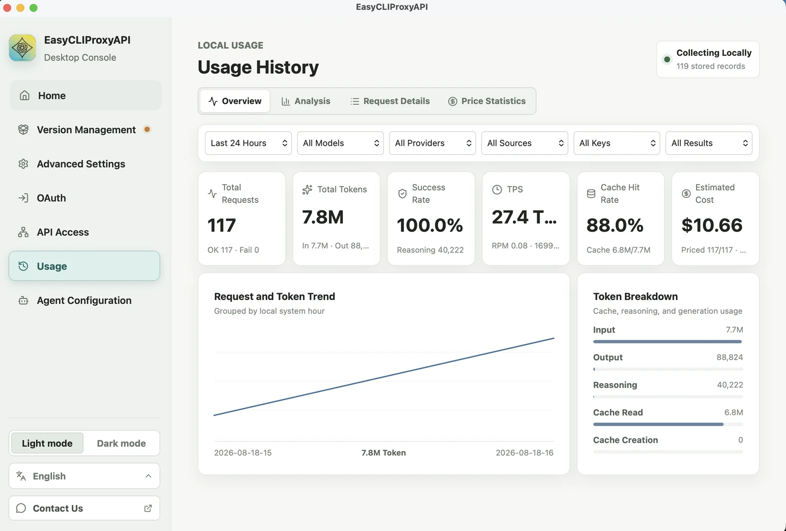
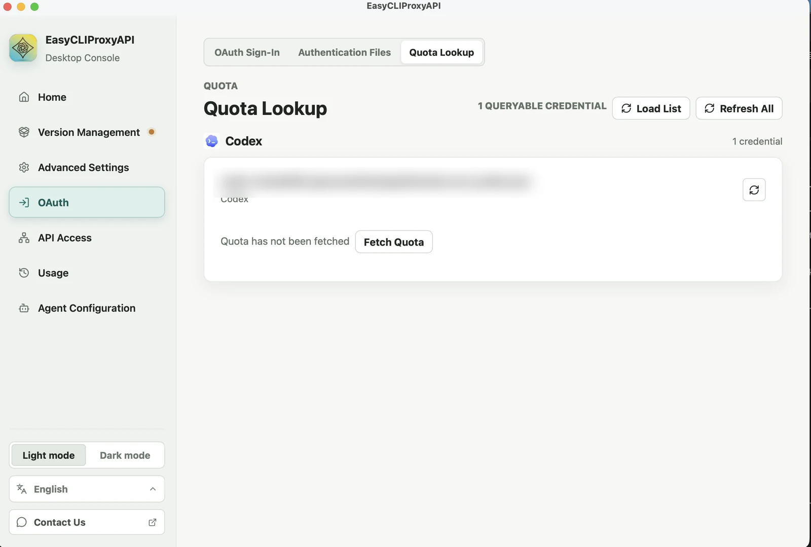

Руководство · около 10 минут · настраивается один раз
ИИ-прокси на вашем компьютере
У вас есть аккаунт ChatGPT, Claude или Gemini, и вы хотите пользоваться им в инструментах для программирования — помощниках по написанию кода вроде Claude Code, Codex CLI или Cline. Эта страница проведёт вас через установку с самого начала и сама соберёт конфигурацию для выбранного инструмента — останется скопировать и вставить, ни одной команды набирать не придётся.
Знакомство
Что такое ИИ-прокси?
Разобраться за минуту — до того, как браться за установку.
Каждая ИИ-компания говорит на своём «языке». Инструмент, написанный под Claude, не понимает аккаунт ChatGPT, и наоборот. Обычно какой у вас аккаунт — тем инструментом производителя и приходится пользоваться.
Прокси — это переводчик, который работает прямо на вашем компьютере. На каком языке говорит инструмент, на таком прокси его и слушает, а потом переводит на язык того поставщика, у которого у вас есть аккаунт. Друг о друге этим двум сторонам знать не нужно.
Слева — то, что у вас уже есть. Справа — то, чем вы хотите пользоваться. Прокси посередине соединяет любую пару.
Три важные вещи
Всё работает на вашем компьютере. Это не сетевой сервис, снаружи к нему никто не доберётся.
Это не способ пользоваться ИИ бесплатно. Вы по-прежнему расходуете тот аккаунт, за который платите, — просто теперь он доступен в большем числе инструментов.
Настраивается один раз. Дальше при включении компьютера всё запускается само.
Что понадобится
| Что нужно | Примечание |
|---|---|
| Компьютер с Mac или Windows | Шаги почти не отличаются |
| Действующий ИИ-аккаунт | ChatGPT Plus/Pro, Claude Pro/Max, Gemini, Kimi или Grok |
| Около 10 минут | Дольше всего ждать загрузку |
Установка
01Скачайте и установите приложение
Приложение называется EasyCLIProxyAPI, оно бесплатное и с открытым исходным кодом.
- Откройте страницу github.com/router-for-me/EasyCLIProxyAPI/releases
- Пролистайте до раздела Assets у самого свежего выпуска
- Для Mac скачайте файл с расширением
.dmg· для Windows — файл.zip - Mac: откройте файл
.dmgи перетащите приложение в папку Applications
Windows: распакуйте архив и запустите файл внутри - Откройте приложение
На Mac это приложение заверено Apple, поэтому открывается сразу, без предупреждения «неизвестный разработчик».
02Установите ядро
То, что вы только что установили, — это оболочка с интерфейсом. Настоящую работу делает ядро, и его нужно один раз доустановить кнопкой.
- В меню слева нажмите
- Нажмите кнопку установки последней версии ядра
- Подождите несколько секунд, пока не появится сообщение об успешной установке

03Запустите прокси
- Нажмите в меню слева
- В блоке Runtime Control нажмите кнопку запуска
- Когда в поле Runtime Status появится Running — готово

Включить нужно один раз. При следующих запусках компьютера приложение стартует вместе с системой, повторять этот шаг не придётся.
04Войдите в свой аккаунт
На этом шаге вы подключаете к прокси ИИ-аккаунт, который у вас уже есть.
- Нажмите в меню слева
- На вкладке OAuth Sign-In найдите карточку, которая соответствует вашему аккаунту
- Нажмите Start Sign-In
- Откроется браузер — войдите как обычно
- После этого карточка переключится на Completed
Здесь многие спотыкаются. Приложение использует технические названия, а не названия продуктов, которые вы покупали:
| У вас аккаунт | Нажимайте карточку |
|---|---|
| ChatGPT | Codex OAuth |
| Claude | Claude OAuth |
| Gemini | Antigravity OAuth |
| Kimi | Kimi OAuth |
| Grok | xAI OAuth |

Несколько аккаунтов лучше одного. Прокси сам чередует их, а когда у одного заканчивается лимит — переключается на следующий, и работа не встаёт на полпути.
Проверьте сохранённые аккаунты
Перейдите на вкладку Authentication Files, чтобы увидеть список аккаунтов, которые хранит прокси. Каждая строка — один аккаунт; зелёное слово active означает, что он рабочий. Кнопка Models в строке показывает, какие модели есть у этого аккаунта, — чуть позже это понадобится.

05Смените ключ защиты
Шаг короткий, но пропускать его не стоит.
Этот ключ — как пароль ко всем ИИ-аккаунтам, в которые вы только что вошли. Приложение ставит стандартный, легко угадываемый ключ — смените его сразу.
- Нажмите в меню слева
- На вкладке General Settings найдите блок Authentication Keys
- Нажмите +, чтобы создать новый ключ, а старый удалите
- Сохраните новый ключ в надёжном месте — он понадобится в части 3

Authentication Keys — прописываются в ваших инструментах для программирования.
WebUI Key — только для входа в панель управления самого прокси.
06Следите за расходом
Не обязательно, но полезно понимать, сколько у вас осталось.
Нажмите , чтобы увидеть число запросов, объём обработанного текста и оценку расходов. А → вкладка Quota Lookup показывает остаток лимита по каждому аккаунту.


Использование
Общие правила
Любому инструменту нужны ровно три вещи. Поняв их, вы настроите любой инструмент самостоятельно.
| Что указать | Что это | Где взять |
|---|---|---|
| Адрес | Куда инструмент отправляет запросы вместо того, чтобы слать их прямо в сеть | Всегда http://127.0.0.1:8317 — отличается только окончание, смотрите ниже |
| Ключ | Пароль, по которому прокси понимает, что обращаетесь именно вы | Ключ, созданный вами на шаге 05 |
| Название модели | Выбор, какой «мозг» из подключённых аккаунтов использовать | → Authentication Files → кнопка Models |
Правило /v1 — здесь ошибаются чаще всего
Окончание адреса зависит от того, на каком «языке» говорит инструмент. Запомните одну
фразу: у Anthropic и Gemini /v1 нет, у остальных есть.
| Инструмент | Полный адрес |
|---|---|
| Claude Code | http://127.0.0.1:8317 |
| Gemini CLI | http://127.0.0.1:8317 |
| Codex CLI · OpenCode · Cline · Continue.dev · Droid | http://127.0.0.1:8317/v1 |
Указать модель не значит запереться в ней
Строка model в конфигурации — это всего лишь значение по умолчанию
при запуске. Все инструменты отсюда позволяют сменить модель потом, а большинство
ещё и прописать несколько моделей сразу:
| Инструмент | Несколько моделей сразу | Смена на ходу |
|---|---|---|
| Claude Code | Да — четыре имени Opus / Sonnet / Haiku / Fable указывают на четыре разные модели | /model |
| Codex CLI | Да — на каждый набор свой файл <имя>.config.toml | /models · или codex -m <имя> |
| Continue.dev | Да — models это список | Нажать название модели внизу окна чата |
| Droid | Да — custom_models это массив | Выбрать в переключателе моделей |
| OpenCode | Заранее указывать не нужно | /models |
| Cline / Roo Code | По одной модели за раз | Изменить поле Model ID в настройках |
| Gemini CLI | По одной модели за раз | Изменить переменную окружения и открыть новое окно |
Генератор конфигурации ниже сам пропишет несколько моделей там, где это поддерживается, и для каждого случая укажет, как переключаться.
Четыре частые ошибки
- Набор моделей зависит от того, в какие аккаунты вы вошли. Без входа в ChatGPT модели GPT не вызвать, как бы правильно вы ни написали название. Тарифы тоже различаются: у Plus есть модели, которых нет у Free.
- После правки конфигурации нужен новый сеанс. Уже открытое окно инструмента работает со старой конфигурацией, пока вы его не закроете и не откроете снова.
- Ключ — это пароль. Не выкладывайте его на GitHub и не отправляйте в групповые чаты.
- Прокси должен быть запущен. Сообщение
connection refusedпочти всегда означает, что приложение забыли включить.
Соберите конфигурацию за меня
Выберите аккаунты, в которые вы вошли, и инструмент, которым хотите пользоваться. Конфигурация появится ниже — вместе с указанием, куда её вставить, и кнопкой копирования.
Если что-то пошло не так
| Что происходит | Что делать |
|---|---|
| Нажали запуск, но Running не появляется | Скорее всего, не установлено ядро. Вернитесь к шагу 02. |
| Вход выполнен, но аккаунта не видно | Браузер мог заблокировать всплывающее окно. Попробуйте снова и разрешите, когда браузер спросит. Проверьте на вкладке Authentication Files. |
401 |
Ключ, вписанный в инструмент, не совпадает с ключом в Authentication Keys. Сверьте посимвольно. |
404 |
Ошибка в окончании /v1 у адреса. Посмотрите таблицу в разделе «Общие правила». |
connection refused |
Прокси не запущен. Откройте приложение, зайдите в и запустите снова. |
unknown provider for model … |
Название модели не относится ни к одному из подключённых аккаунтов. Посмотрите список по кнопке Models или войдите ещё и в нужный аккаунт. |
| Сообщение о том, что лимит исчерпан | У аккаунта закончился лимит. Подождите восстановления или войдите ещё в один аккаунт. |
Частые вопросы
Нужно ли работать с командной строкой?
Нет. Установка — это нажатие кнопок в приложении с обычным интерфейсом. Конфигурацию эта страница собирает сама, вам остаётся скопировать её и вставить в нужное место.
Придётся ли доплачивать?
Приложение бесплатное. Но новых лимитов оно не создаёт — вы по-прежнему расходуете лимит того аккаунта, за который платите.
Не отправляет ли оно мои данные куда-то на сторону?
Нет. Приложение работает на вашем компьютере и слушает только локальный адрес
127.0.0.1, с других машин к нему не обратиться. Данные идут напрямую
с вашего компьютера к тому поставщику, в аккаунт которого вы вошли, — так же,
как при обычной работе.
Если запускать Claude Code через ChatGPT, будет ли это то же самое, что оригинал?
Нет. Интерфейс и порядок работы те же, но разные модели ведут себя по-разному — и качество, и манера ответов будут отличаться. Смотрите на это как на способ пользоваться любимым инструментом, а не как на способ получить Claude бесплатно.
Можно ли настроить несколько инструментов сразу?
Можно, и в этом вся прелесть. Один прокси обслуживает все инструменты одновременно —
Claude Code, Codex CLI и OpenCode вместе смотрят на :8317, все три работают
параллельно и используют одни и те же аккаунты, в которые вы вошли.
Как всё это удалить?
Зайдите в , нажмите stop, а потом удалите приложение как любую другую программу. Инструменты, которые вы настраивали, вернутся к прежнему поведению, как только вы уберёте из них добавленные адрес и ключ.
Могут ли из-за этого заблокировать мой аккаунт?
Скажем прямо: риск есть. Доступ к подписочному аккаунту через сторонние автоматизированные средства обычно выходит за рамки условий использования поставщика. При обычном личном использовании риск невелик, но заметно растёт, если одним аккаунтом пользуются несколько человек или запросы идут с необычной частотой. Подумайте, прежде чем подключать важный для вас аккаунт.